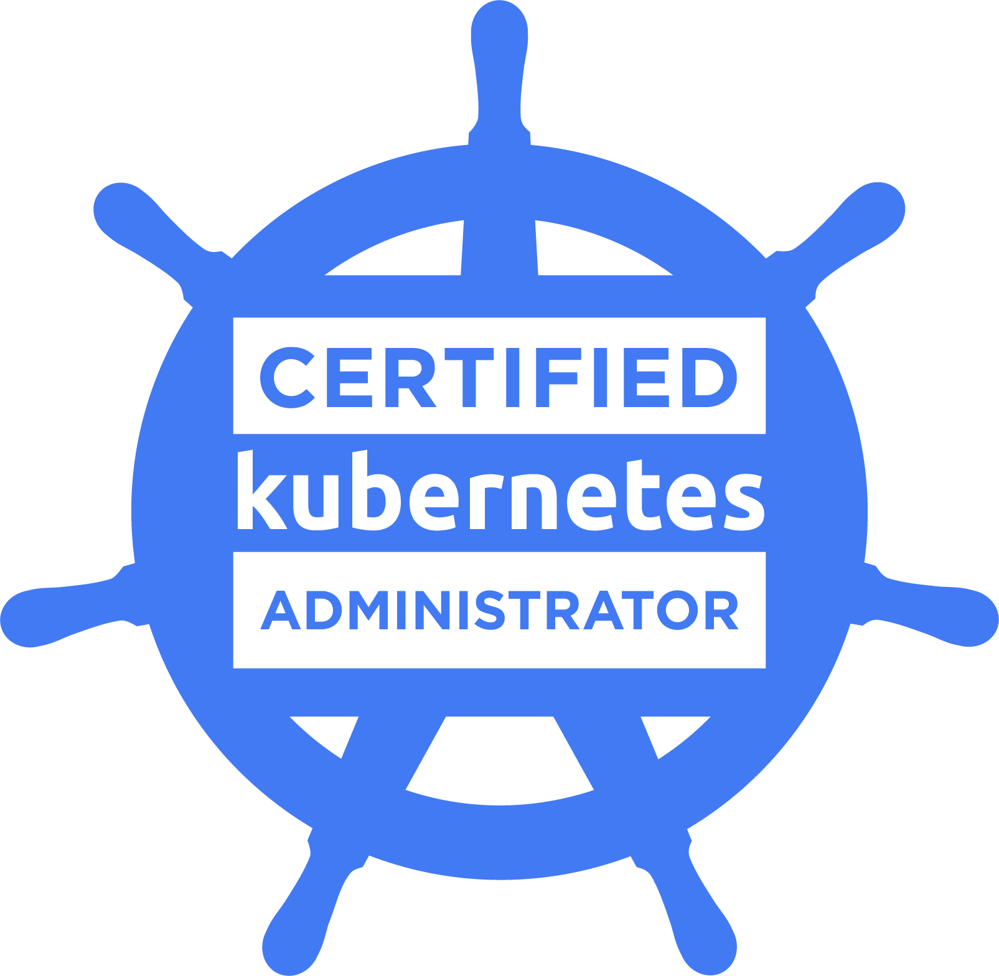
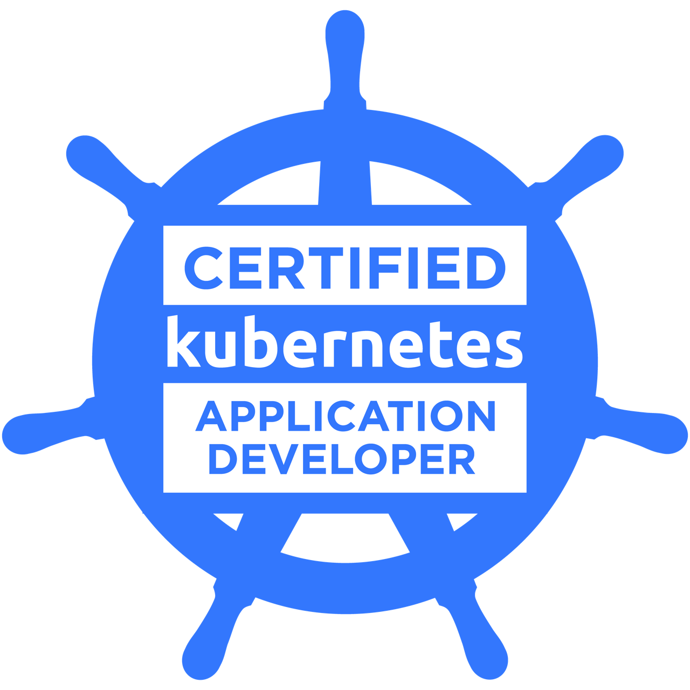

Certifications
-

Certified Kubernetes Administrator (CKA)Score: 91% -

-
Kubernetes and Cloud Native Security Associate (KCSA)In progress
Work Experience
Spindox S.p.A. Cloud Native Engineer
Client: Carnival Corporation World's largest cruise company
I currently work within the Global Maritime
Information Systems (GMIS) department, which manages
GMIS infrastructure across Carnival's entire fleet and
all its cruise brands, often working closely with the
brands' own IT teams.
My main role is to ensure
that Kubernetes clusters running in Azure and in
VMware environments onboard the ships are secure,
reliable, up-to-date and healthy.
DevOps
- Work closely with development and release teams on Kubernetes-related activities and issues.
- Troubleshoot application issues across the entire lifecycle, from deployment pipelines in Azure DevOps to runtime problems in Kubernetes. Create and maintain Gitlab workflows for Snyk SAST and SCA scans.
Day 1 Ops
- Provision and configure new Kubernetes clusters using Infrastructure as Code (Terraform and Ansible Automation Platform), including essential components such as distributed storage, private container registries and load balancers, to deliver production-ready environments tailored to business requirements.
- Integrate and deploy core platform components such as Apache Kafka, Nginx and Traefik Ingress controllers, and Dynatrace, as well as additional services that extend cluster capabilities and meet evolving business requirements (e.g. KEDA, InfluxDB and Grafana).
- Design and deploy containerized services to address specific operational needs (e.g. a secure file transfer service across all clusters), while ensuring compliance with corporate security policies.
Day 2 Ops
- Perform regular Kubernetes cluster upgrades along with updates to essential system components, minimizing downtime and maintaining reliability, security and version consistency across all environments.
- Monitor clusters and workloads to identify and troubleshoot issues, escalating to vendors when needed.
- Review and improve resource allocation to prevent over- and under-provisioning and reduce cloud costs without affecting performance.
- Review Orca and Qualys vulnerability scan reports and validate security patching plans to keep the infrastructure secure and up to date.
Kiratech S.p.A. Cloud Native Engineer
-
Client: Intesa San Paolo S.p.A. One of the largest European banking groups
Maintained, extended and optimized a highly available HashiCorp Vault infrastructure, fully compliant with the PCI DSS standard.
More specifically, I:- integrated Vault into CI/CD pipelines using Jenkins
- retrieved secrets from Vault for OpenShift workloads
- defined key metrics for monitoring cluster health and set up alerting
- set up disaster recovery procedures
- integrated Vault with a Hardware Security Module (HSM)
- created Ansible playbooks to manage the full lifecycle of Vault nodes (hardening, provisioning, PKI setup, basic configuration, updates and removal)
- implemented a centralized web dashboard to monitor license limits, track active entities and alert stakeholders when thresholds were reached
-
Client: YOOX Net-a-Porter Group S.p.A. Global luxury fashion e-commerce
As a HashiCorp Vault consultant, I helped drive the adoption of a Global Secrets Management Solution across the company.
Specifically, I:- kept the Vault HA infrastructure, made up of 30 EC2 nodes, updated, healthy and secure
- maintained a custom credentials broker that integrates Vault with the Jenkins credentials store
- used Splunk to audit access to Vault credentials
- created AWS Lambda functions to automate recurring tasks, such as moving secrets between namespaces and clusters and retrieving detailed usage information
- onboarded internal teams onto GSMS and worked with engineering, InfoSec and DevOps teams to gather requirements, define access controls and provision isolated namespaces with the appropriate policies
-
Client: CSI Piemonte S.p.A. Public consortium providing IT services for public administration in the Piedmont region (Italy)
I provided best practices and security recommendations for provisioning and maintaining a HashiCorp Vault cluster.
Specifically, I:- hardened cluster nodes and Bash scripts
- set up automatic updates
- automated leader election to ensure reliable failover
- enabled auto-unseal
- implemented a robust backup and restore strategy
-
Client: Punch Torino S.p.A. Engineering company specialized in automotive systems, formerly the Italian General Motors Engineering Center
As an AWS consultant, I supported the customer with cloud infrastructure, security and automation.
Specifically, I:- designed and implemented a centralized backup and disaster recovery solution using AWS Backup across EC2, EBS and RDS resources
- managed the Atlassian suite lifecycle, including provisioning, configuration, backup restoration, periodic updates and OpenSearch integration
- performed PostgreSQL RDS and OpenSearch upgrades
- set up autoscaling for EC2 instances hosting Atlassian applications
- configured Application Load Balancers (L7)
- monitored cloud costs and set up related alerts
- migrated and upgraded the CloudBees CI/CD platform on EKS
- designed and deployed log processing pipelines using BanzaiCloud Logging Operator in Kubernetes to normalize, parse and enrich application logs before forwarding them to Elasticsearch
-
Client: Euronext N.V. A leading European stock exchange operator
Led the adoption of HashiCorp Vault on OpenShift clusters running on IBM Power.
Solved architectural compatibility issues and adapted the Vault deployment to fit the platform constraints. -
Client: Alpitour S.p.A. Italy’s leading travel and tourism group
I provided on-call support for OpenShift environments.
Specifically, I:- diagnosed and resolved incidents involving production workloads within defined SLAs, often during war room sessions
- used Dynatrace for monitoring, alerting and root cause analysis
- took part in post-incident reviews to identify preventive actions and improve platform resilience
Arpanet Italia S.r.l. - Milan (Italy) Founder, Managing Director and Network Engineer
Founded and managed a Wireless Internet Service
Provider delivering high-speed
internet access to individuals, businesses and public
institutions in both urban
and remote areas.
I helped grow the company from a small customer base
to thousands of customers
and dozens of Points of Presence across the country.
Specifically, I was responsible for:
- designing and building the entire network infrastructure from scratch
- managing faults, QoS, service assurance and service delivery
- automating the provisioning and configuration of network devices (MikroTik, Juniper and Ubiquiti) using Python, Terraform and AWS
- leading a development team to build an all-in-one ERP platform for ISPs using Django, Bootstrap and jQuery, including CRM, CMS, customer and employee management, billing, ticketing and financial reporting
- managing the financial, commercial, accounting and tax aspects of the company (with extensive use of Microsoft Word and Excel)
- managing customer and supplier relationships
- managing employees and workplace safety
A.C.F. S.r.l. - Acate (Italy) Telecommunications Field Technician
My first job in the ICT field involved providing on-site technical support on public telecommunications infrastructure to ensure customer connectivity.
- installed ADSL, SHDSL, POTS/RTG, VoIP and ISDN lines on behalf of major Italian telecom operators, including Vodafone, TIM and Wind
- diagnosed and repaired faults across the public telephone network, from PSTN central offices to roadside distribution cabinets and junction boxes, all the way to customer premises
Escomputers - Acate (Italy) Founder and Owner
My first experience as a tech entrepreneur was running a small IT business focused on:
- selling computers and smartphones, along with hardware and software support
- developing websites using Django and Bootstrap
- installing and maintaining security and IP video surveillance systems for individuals, businesses and public institutions
- providing network optimization and IT support, covering both hardware and software, for local businesses, schools and municipalities
- managing customers, employees and suppliers
Skills Map
| Operating Systems | |
| Debian-based Linux |
|
| RHEL |
|
| Windows |
|
| Infrastructure as Code & Automation | |
| Terraform |
|
| Ansible Automation Platform |
|
| Cloud Providers | |
| AWS |
|
| Azure |
|
| GCP |
|
| Container Orchestration | |
| Kubernetes |
|
| K3s |
|
| OpenShift |
|
| Kubernetes & Platform Ecosystem | |
| Rancher |
|
| Harbor Registry |
|
| Longhorn |
|
| Velero |
|
| Helm and Kustomize |
|
| KEDA - Dynatrace scaler |
|
| Apache Kafka |
|
| Networking & Traffic Management | |
| Nginx and Traefik Ingress Controllers |
|
| HAProxy |
|
| Tyk |
|
| Version Control, CI/CD & GitOps | |
| Git |
|
| GitHub |
|
| GitLab |
|
| Azure DevOps |
|
| Jenkins |
|
| Argo CD |
|
| Database Infrastructure | |
| MariaDB |
|
| PostgreSQL |
|
| MySQL |
|
| MongoDB |
|
| DynamoDB |
|
| InfluxDB |
|
| Virtualization & Containerization | |
| VMware vSphere |
|
| Nutanix |
|
| Docker |
|
| Podman |
|
| Buildah |
|
| Programming, Scripting & Web | |
| Python |
|
| Bash |
|
| Golang |
|
| JavaScript |
|
| HTML5 |
|
| CSS |
|
| Django |
|
| RouterOS scripting |
|
| Monitoring & Observability | |
| Dynatrace |
|
| Splunk |
|
| Fluentd |
|
| Prometheus and Grafana |
|
| Secrets Management | |
| HashiCorp Vault |
|
| Security Tools | |
| Snyk |
|
| Trivy |
|
| GitGuardian |
|
| Checkov |
|
| Qualys |
|
| Orca Security |
|
| Languages | |
| Italian | Native |
| English | B2 |
Education
Radio Elettra Private School - Rome (Italy)
350-hour training program officially recognized under Italian Law (Art. 14, Law 845/78).
The course combined theoretical lessons and hands-on lab work covering analog and digital electronics, computer architecture, microprocessors, electrical engineering and basic programming.
Final score: 90/100.
Secondary School Diploma (Liceo Classico) - S. Cannizzaro High School - Vittoria (Italy)
Italian classical high school with a
broad academic curriculum focused on literature,
philosophy, Latin and Ancient Greek, alongside
mathematics, physics and sciences.
Final score: 78/100.
British Study Centers London Hampstead (UK)
Awarded a scholarship for an intensive English course focused on written and spoken communication with native speakers.
Achieved an Upper Intermediate level certificate after written and oral examinations.
Interests
I'm particularly interested in emerging technologies and personal tech projects.
-
Blockchain technology
I follow the evolution of blockchain technology, with a particular interest in practical applications beyond cryptocurrencies.
-
IoT
I work on personal IoT projects using Home Assistant for home automation and for indoor and outdoor growing systems.
These include environmental and soil monitoring, smart irrigation and indoor cultivation setups.
I enjoy traveling, meeting new people and learning from different experiences and perspectives.
I've been playing guitar since I was a teenager and I
enjoy riding motorcycles,
especially on challenging roads and tracks.
Basketball is another major passion of mine.